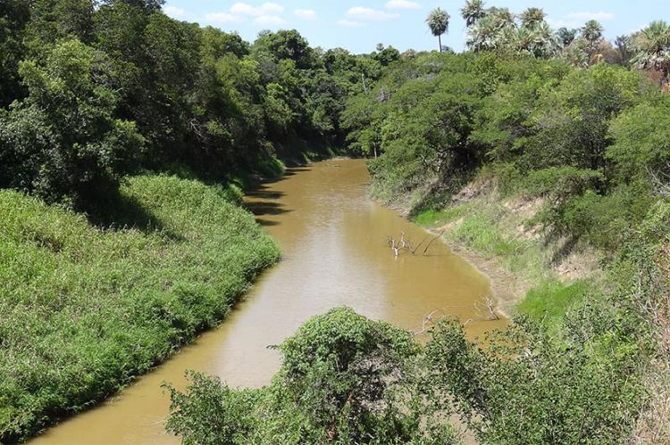
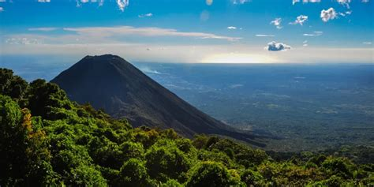

MAPA DE LA LIBERTAD

Información
La Libertad es uno de los departamentos más turísticos de El Salvador, ubicado en la zona central del país, con una extensión de 1,653 km². Su cabecera es Santa Tecla. Es reconocido por sus hermosas playas en el océano Pacífico, su desarrollo económico y su cercanía con la capital.
Datos Históricos
Fue creado como departamento en 1865. La Libertad se desarrolló rápidamente gracias a la producción agrícola y la construcción del puerto de La Libertad, que en su época fue uno de los principales puntos de comercio del país.
Lista de Municipios
- Antiguo Cuscatlán
- Chiltiupán
- Ciudad Arce
- Colón
- Comasagua
- Huizúcar
- Jayaque
- Jicalapa
- La Libertad
- Nuevo Cuscatlán
- San José Villanueva
- San Juan Opico
- San Matías
- San Pablo Tacachico
- Quezaltepeque
- Santa Tecla
- Sacacoyo
- Talnique
- Tamanique
- Teotepeque
- Tepecoyo
- Zaragoza
Centros Turísticos
Las playas como El Tunco, El Zonte y La Libertad son famosas por el surf y el turismo. También destaca el Malecón del Puerto de La Libertad y el Parque Nacional Walter Thilo Deininger.

Centros Turísticos
El Zunzal llamado así por el pueblo de El Zunzal, este descanso es el favorito de los novatos del surf. En el otro extremo de la playa de El Sunzal
Centros Turísticos
Parque de Aventuras Surf City Walter, En esta área natural protegida la adrenalina y la majestuosidad se complementan cuando se explora su oferta de atracciones y aventuras, en la que los deportes extremos son los protagonistas
Centros Turísticos
El Parque nacional El Boquerón es un parque natural de El Salvador que se encuentra en la parte superior del volcán de San Salvador, a 1800 metros (5905 pies) sobre el nivel del mar, en una cordillera volcánica del departamento La Libertad.
Centros Turísticos
San Andrés es un parque arqueológico prehispánico de la cultura maya ubicado en la jurisdicción de Ciudad Arce del departamento de La Libertad de El Salvador, que fue capital de un señorío maya, que tenía supremacía sobre los demás asentamientos del valle. San Andrés se encuentra a 1 km al noreste de Rio Sucio.

Lagos
Aunque no existen grandes lagos naturales en La Libertad, sin emabargo, cuenta con El Plan de la Laguna, Laguna de Chanmico, municipio de San Juan Opico .
Ríos
Entre los principales ríos de La Libertad, delimitan parte del departamento El río Sucio es un corto río de El Salvador que discurre por los departamentos de La Libertad y San Salvador. Es un afluente del río Lempa. El río tiene una longitud de 60 km y una cuenca de 1446 km². La profundidad del río puede alcanzar los 3 metros.
Volcanes
El Volcán de San Salvador (o Quezaltepeque) domina el paisaje del departamento. Es un símbolo natural y una zona de senderismo y miradores con vistas espectaculares.
Personajes Célebres
Agustín Farabundo Martí Rodríguez (Teotepeque,departamento de La Libertad, El Salvador , 5 de mayo de 1893, San Salvador-1 de febrero de 1932) fue un revolucionario y político comunista salvadoreño.
Personajes Célebres
José Rutilio Quezada, (Quezaltepeque, La Libertad, 30 de septiembre de 1930) es un escritor, botánico y científico salvadoreño. Trabaja también en el campo de la entomología, y además se ha destacado como novelista. Publicó dos novelas: Dolor de Patria y La última guinda